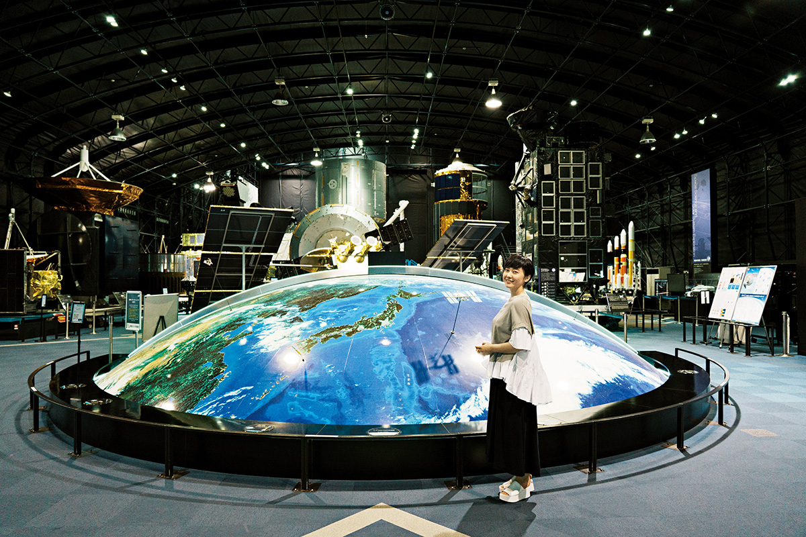
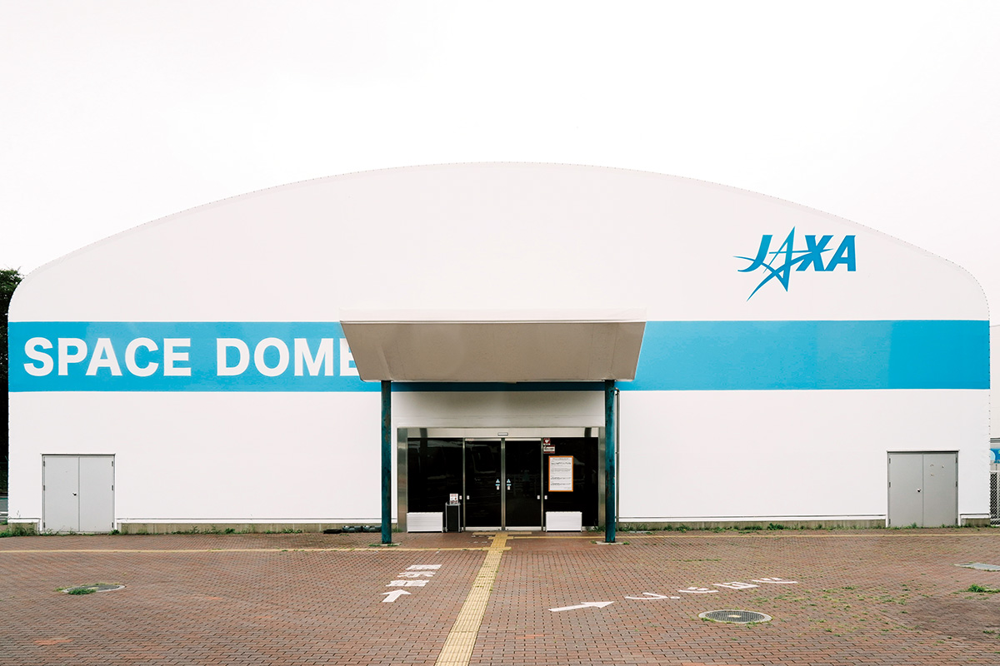
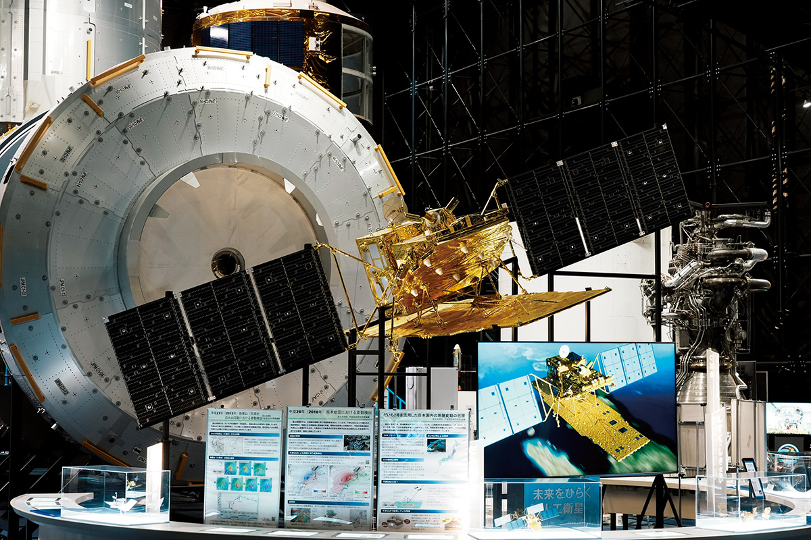
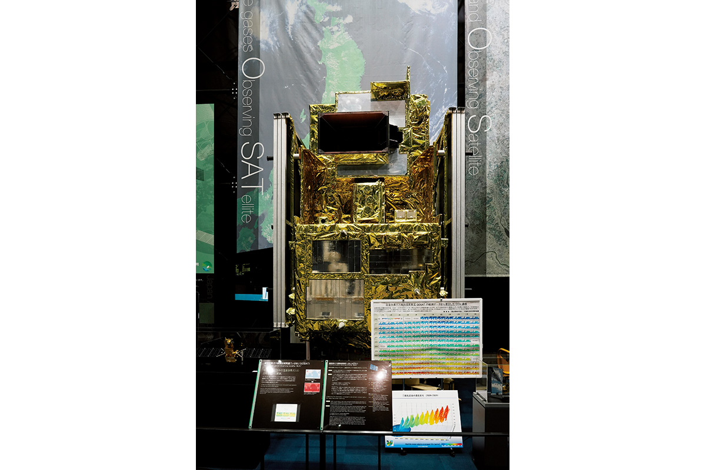
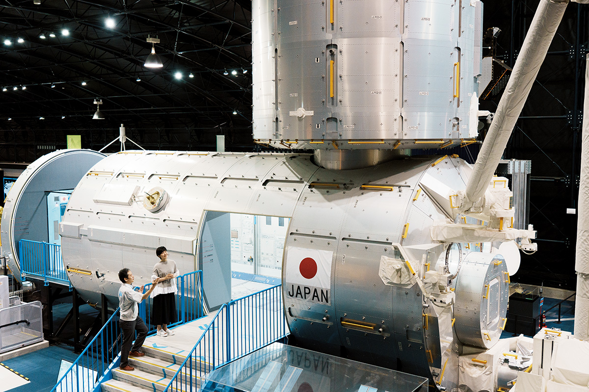
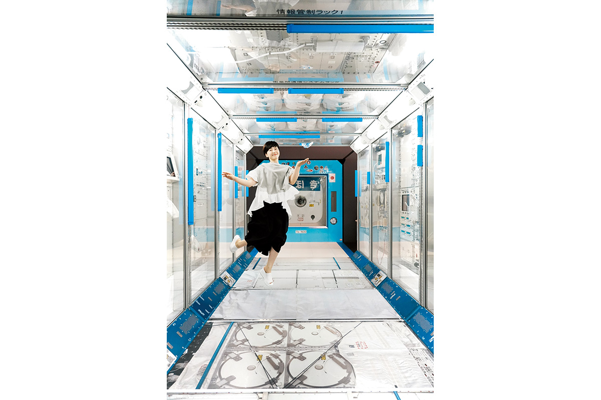
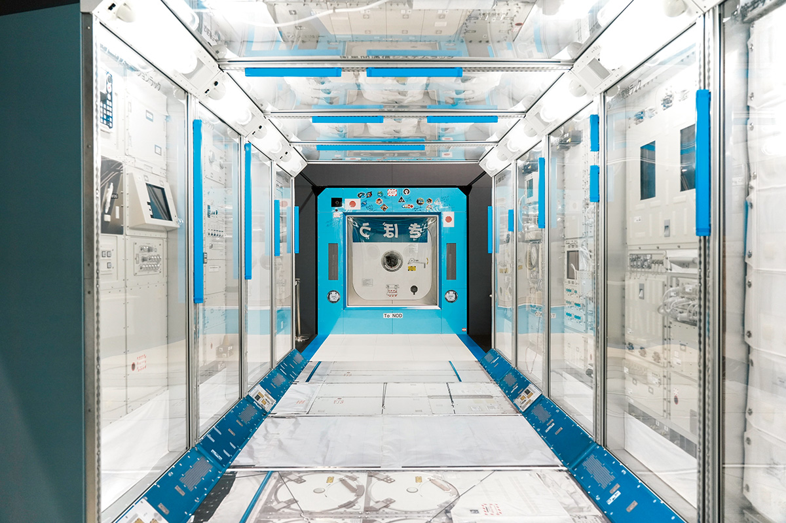
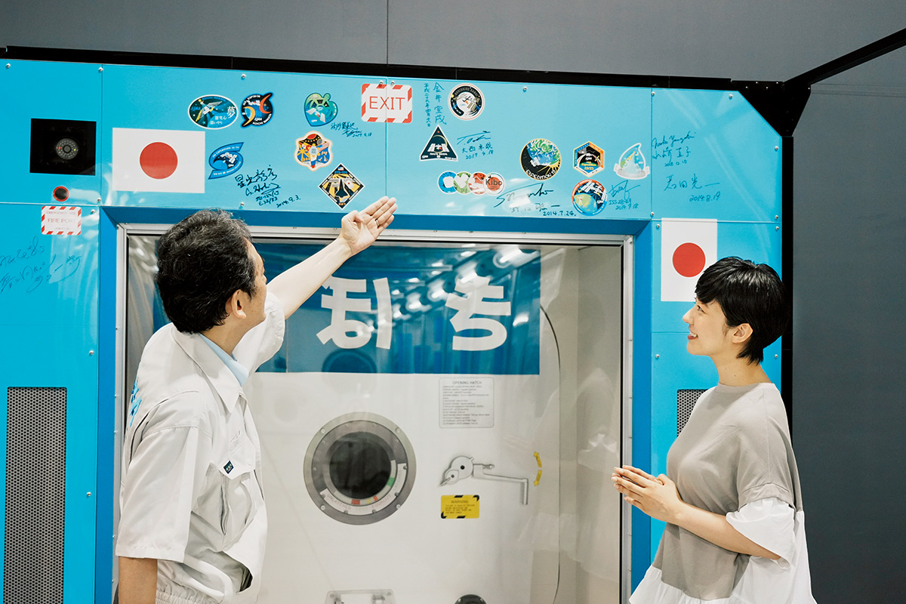
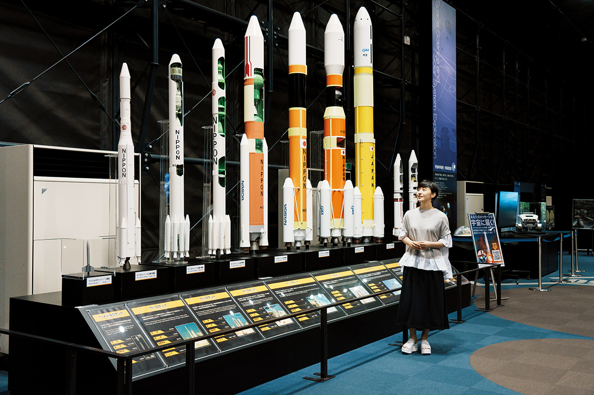
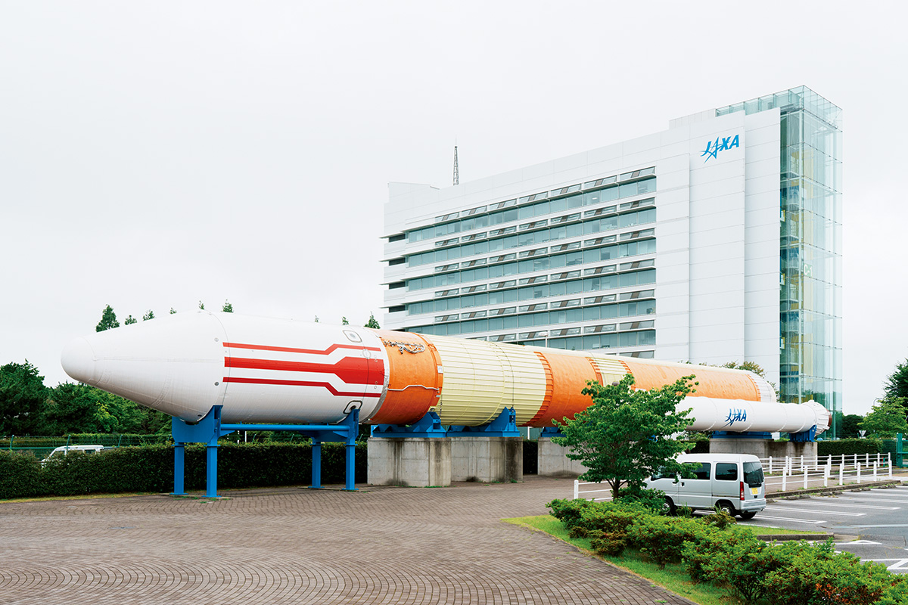

Префектура Ибараки · Цукуба · космос
Космический центр Цукуба: ракеты, спутники и японский модуль МКС в натуральную величину

В городе науки Цукуба работает многопрофильный центр японского космического агентства JAXA. Его выставочный зал «Спейс-дом» открыт для всех: здесь можно зайти внутрь японского модуля Международной космической станции, рассмотреть настоящий спутник и пройти по истории японских ракет от крошечной «Пенсил» до H3.
Центр
Где делают японский космос
Космос во все времена притягивает и детей, и взрослых. Япония занимается космическими разработками с 1950-х годов, шла своим путём и вышла в мировые лидеры, в том числе в технологиях запуска. Ведёт эту работу от фундаментальных исследований до практического использования Японское агентство аэрокосмических исследований, JAXA.
Космический центр Цукуба стоит в научном городке Цукубы, и это многопрофильный объект агентства с новейшими испытательными стендами. Здесь создают спутники и обрабатывают снимки, которые они присылают, управляют японским модулем «Кибо» на Международной космической станции и готовят астронавтов. На территории площадью около 53 гектаров есть места, открытые для всех, например магазин с космическими сувенирами. Но прикоснуться к настоящей космической технике можно в выставочном зале «Спейс-дом».

В 2022 году NASA готовило программу «Артемида», первую со времён «Аполлона» попытку высадить людей на Луну, а JAXA набирало новых астронавтов, которые будут участвовать в лунных программах. Зал в Цукубе показывает, с чего начинался этот путь и куда он ведёт. Популяризатор космонавтики, которая ведёт передачи о космосе на телевидении, радио и в интернете, говорит, что в «Спейс-доме» каждый раз находит что-то новое.
«Главное здесь то, что японскую космонавтику, которой занимается JAXA, можно изучать в огромном, настоящем масштабе»
популяризатор космонавтики
Зал
От Земли к спутникам
Внутри зал оформлен как открытый космос. Первым в глаза бросается «Дрим-порт», Земля в масштабе один к миллиону, а вокруг неё летают МКС, спутники и ракеты, и масштаб космоса сразу становится понятным. Дальше на большом мультиэкране «Мамору хоси» показывают, чем заняты спутники, и предлагают ответить на вопросы викторины.

В разделе спутников по экспонатам можно проследить всю историю японских разработок. «Юри» это резервный экземпляр настоящего спутника вещания и единственный подлинный спутник в зале. Рядом «Дайти-2», спутник наблюдения за сушей, запущенный в 2014 году ракетой H-IIA, и серия технологических спутников «Кику», на которых выросли все последующие разработки JAXA. Среди экспонатов есть и аппараты, которые в 2022 году работали на орбите. Гиды регулярно рассказывают, откуда у спутников такие имена и зачем их покрывают блестящим золотистым материалом, так что интересно и без подготовки.
«Дайти-2» решает сразу несколько задач. После сильного землетрясения, когда до места бедствия трудно добраться, спутник быстро снимает большую территорию, и данные помогают спасателям. Он с точностью до нескольких сантиметров замечает, как сдвигается земля при землетрясениях и извержениях, и по этим данным власти решают, можно ли пускать людей в опасный район. Он же следит за лесами мира: в 2010–2011 годах спутник помог обнаружить в Бразилии 1000 мест вырубки леса и 150 мест незаконной рубки. В 2022 году готовились к запуску «Дайти-3» и «Дайти-4».

Станция
«Коунотори» и модуль «Кибо»
На повороте маршрута стоит «Коунотори», грузовой корабль, который возил на МКС припасы. Его высота 9,8 метра, и от него трудно отвести взгляд.
«Когда я впервые увидела его здесь вблизи, меня поразил масштаб. На смену ему разрабатывают корабль для снабжения лунных экспедиций, и очень интересно, каким он станет»
популяризатор космонавтики

Модуль «Кибо» здесь не просто того же размера, что настоящий. В лабораторном отсеке до мелочей воспроизведены приборы для экспериментов и поручни, за которые астронавты держатся, чтобы не уплыть в невесомости. Зайти внутрь может любой посетитель.


У входа в модуль собраны автографы астронавтов JAXA, работавших на «Кибо», среди них Соити Ногути и Норисигэ Канаи, и наклейки их экспедиций. В глубине висит норэн, традиционная тканевая занавеска, которую астронавт Хосидэ повесил, когда прибыл на «Кибо».

Популяризатор космонавтики, которая осматривала зал, в 2022 году сама участвовала в отборе кандидатов в астронавты, о котором давно мечтала.
«Я выкладывалась на пределе сил, и это был по-настоящему ценный опыт. Когда всё закончилось, я снова поняла, как люблю космос. Здесь эту любовь можно почувствовать, приезжайте хотя бы раз»
популяризатор космонавтики
Ракеты
От «Пенсил» до H3

Японские ракеты начинались с «Пенсил», крошечной ракеты длиной 23 сантиметра. Её показывают в натуральную величину, а рядом стоят девять моделей в масштабе 1:20, среди них H-II, первая ракета, целиком сделанная в Японии, и H3, которую в 2022 году ещё разрабатывали. У каждой модели указаны её характеристики.
Экскурсии
С гидом по залу и по центру
Зал можно обойти самому, но интереснее с гидом. Бесплатная экскурсия по «Спейс-дому» длится около часа: гид рассказывает об истории JAXA и о любопытных подробностях, которыми потом хочется поделиться. По словам сотрудника отдела по связям с общественностью JAXA, так можно последовательно понять, как космические разработки связаны с повседневной жизнью. В 2022 году бронировать её было не нужно: о начале объявляли в зале, и присоединиться мог любой.

Есть и экскурсия с гидом на автобусе по закрытой части центра, крупнейшего аэрокосмического объекта Японии. Её участники видят центр управления модулем «Кибо», где круглые сутки ведут эксперименты и поддерживают астронавтов, и редкие приборы, вернувшиеся из космоса. В 2026 году на эту экскурсию записываются только заранее через сайт центра.
Космический центр Цукуба, зал «Спейс-дом»
- Адрес
- префектура Ибараки, Цукуба, Сэнгэн, 2-1-1
- Часы работы
- бесплатные экскурсии по залу (около часа) в 10:00, 11:00, 13:00, 14:00, 15:00 и 16:00
- Цены / Вход
- экскурсия на автобусе (около 1 часа 10 минут, 4 раза в день) 500 иен, для старшеклассников и младше бесплатно
Фото: Мидзуаки Вакахара.